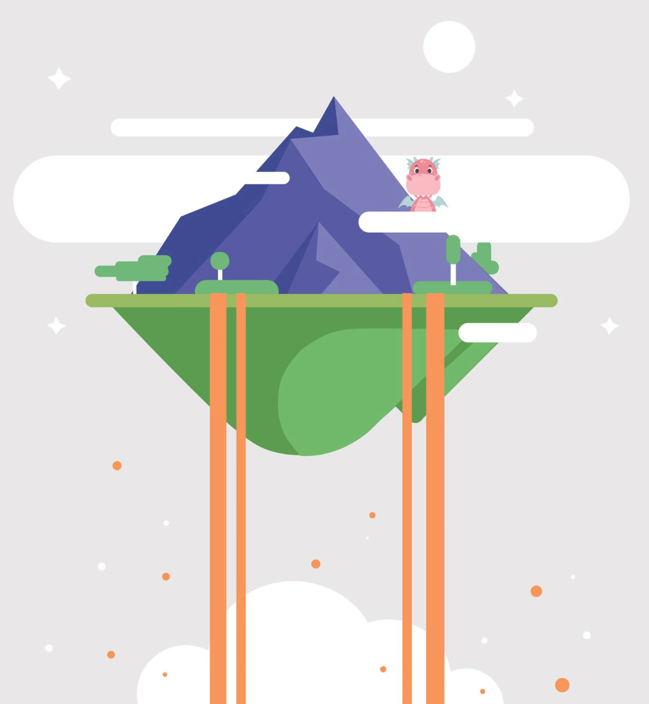
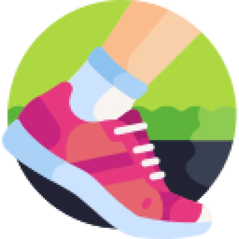
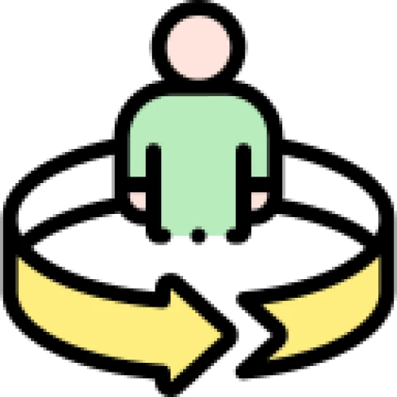
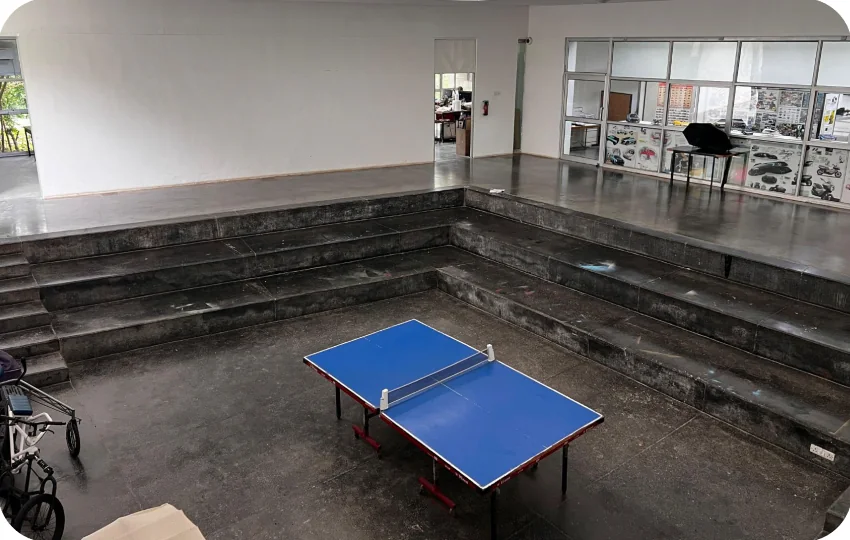
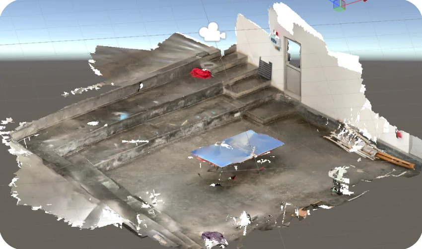
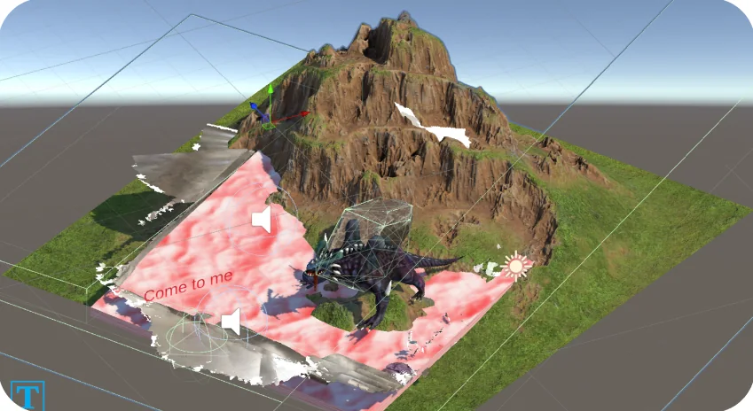
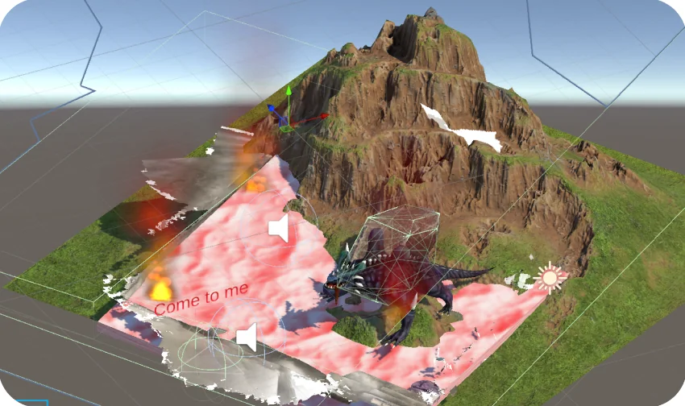

Dragon
Island
"Transforming traditional spaces into magical encounters."
An augmented reality experience that turns the campus table-tennis area into a floating island with a dragon to find.

An ordinary corner, made magical.
Imagine transforming an ordinary, familiar space into something magical, something playful and unexpected. Dragon Island reimagines the real world through augmented reality, allowing users to not just observe, but to engage and interact with the environment in delightful ways.
Scan, walk, step inside.
-
1
Scan
Begin by scanning the designated TT Area.
-
2

Interact
As you move within the environment, your position triggers various events.
-
3

Immerse
Reach a specific point and immerse yourself in the environment.
From ping-pong table to dragon island.
-

step 1Targeted area: the TT Area
Picked the table-tennis area on campus as the stage for the experience.
-

step 2Mapping the area
3D-scanned the space so the virtual world lines up with the real one.
-

step 3Environment building
Built the island, mountain and dragon in Unity, right on top of the scan.
-

step 4AR development & interactions
Added position-based triggers and sound, so the scene comes alive once you walk to the marked spot.